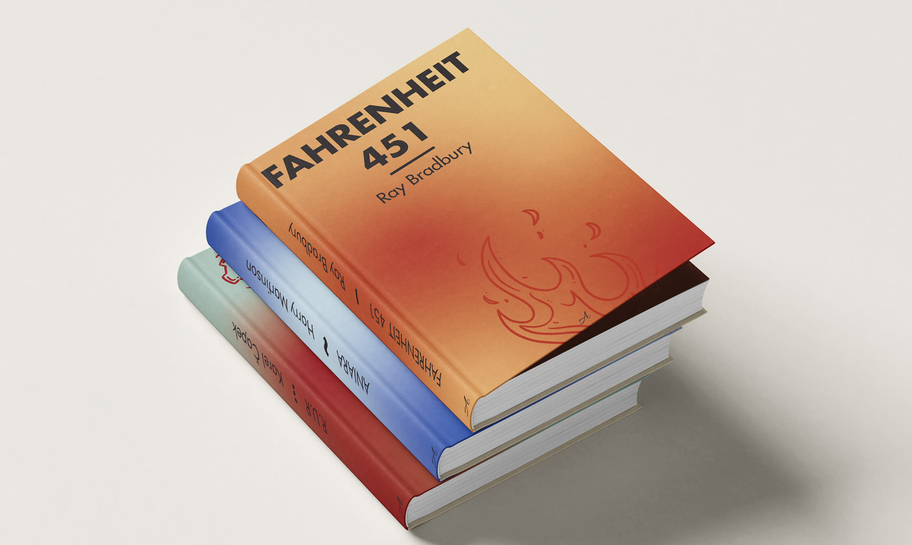
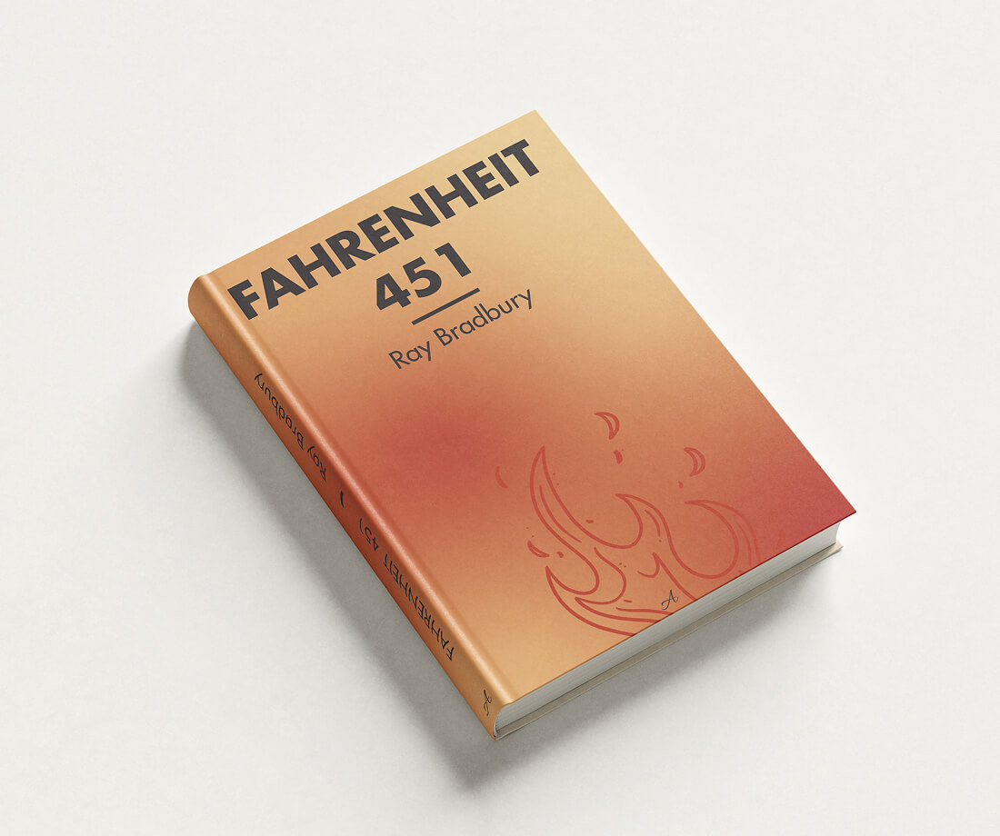
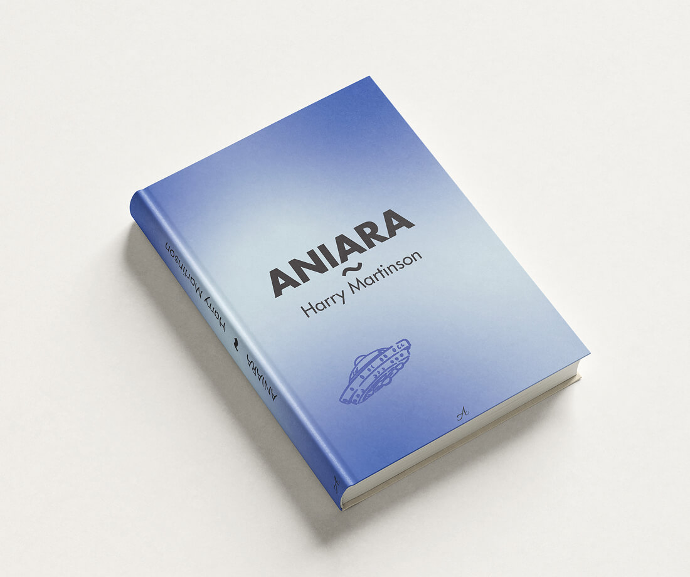
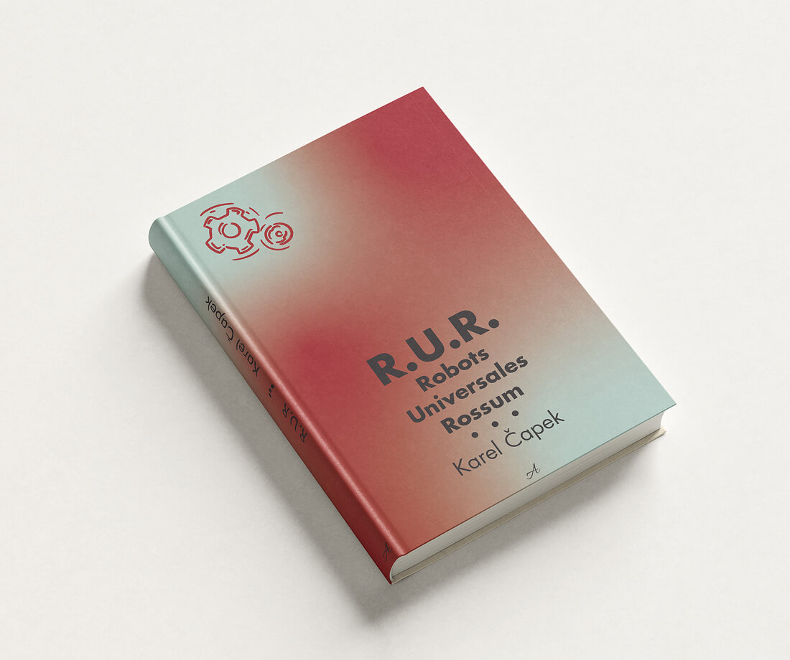
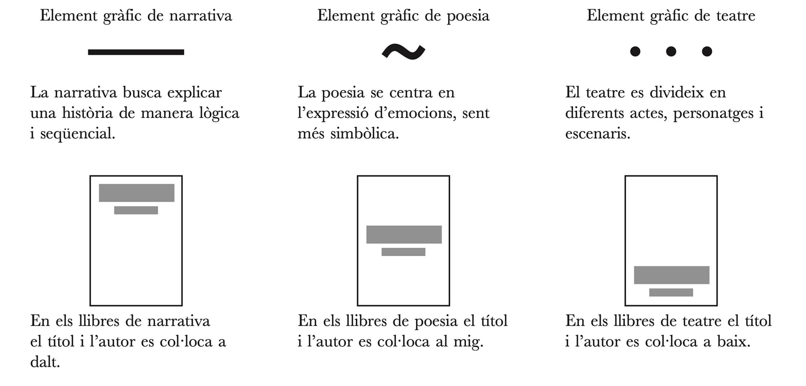
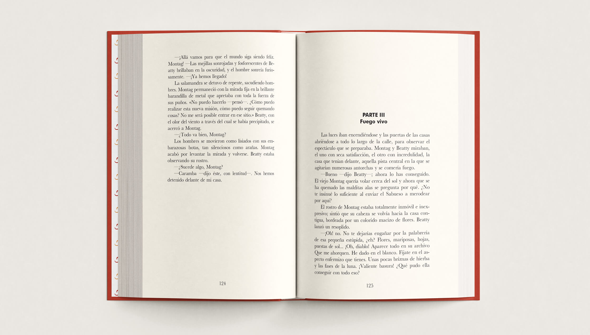
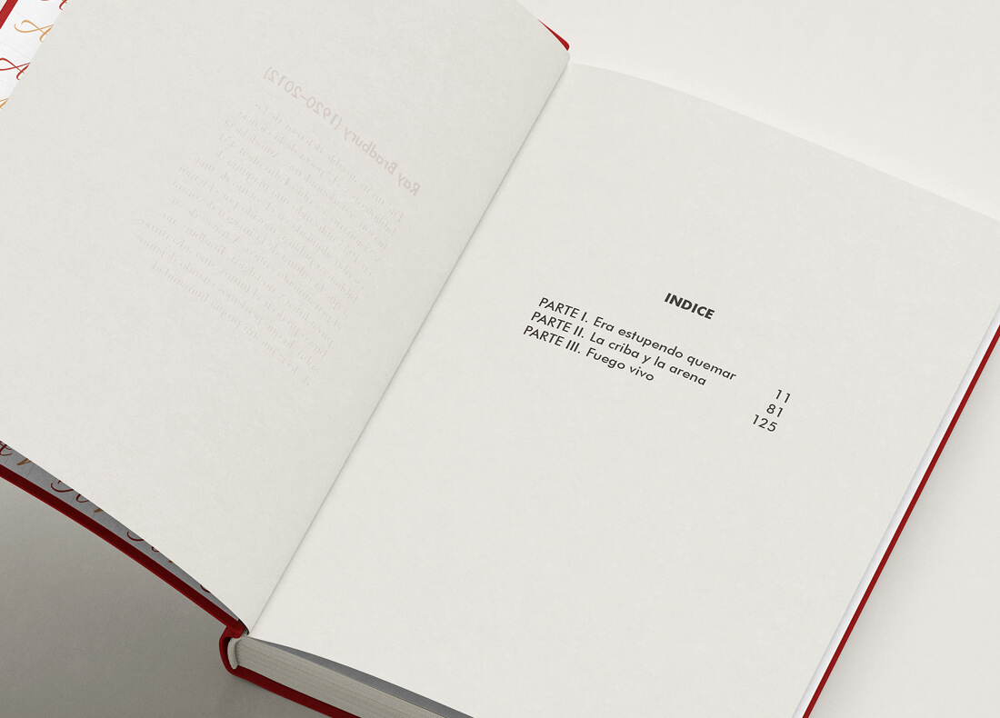
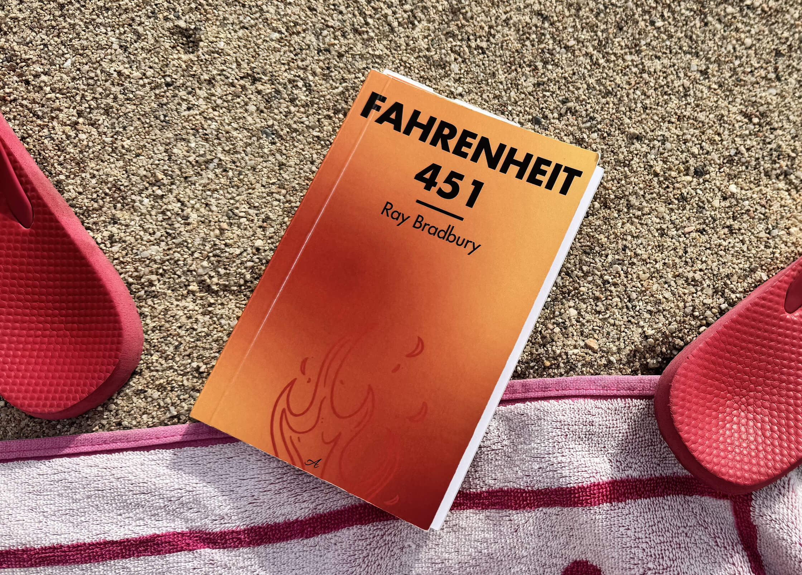

The Dystopia Series:
Cover Book Design
2026
University Project

For this editorial project, the goal was to design a unified book collection featuring classic dystopian literature: Fahrenheit 451 (Narrative), R.U.R. (Theatre), and Aniara (Poetry).
The main challenge was establishing a visual system with three levels of differentiation: the books had to look like a cohesive collection, clearly distinguish their literary genres, and retain their individual identity as unique titles.
I used blurred, two-color gradient backgrounds as a visual metaphor for the distorted and unsettling realities portrayed in dystopian worlds.




To differentiate the genres, I created a specific grid system with a unique graphic element for each.
Finally, to give each book its own identity, I designed an illustration and selected a specific color palette that reflects the core theme of each story.
I also designed the interior layout for the narrative book, prioritizing reading comfort and legibility.


